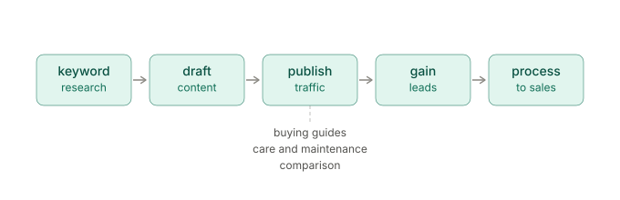
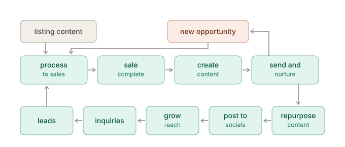
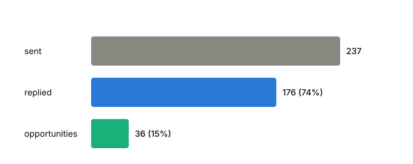

Over 28 days our blog content pulled 13,000 sessions. 4,800 of those clicked through to a product page. Not one of them showed up in a form fill or a chat message with a blog as the source.
Over the following eight weeks, content made for customers we already had produced 36 opportunities and 6 repeat sales.
Same content team, same effort, opposite starting point. This is what both directions actually returned, and where the measurement on each side falls apart.
Key Findings at a Glance
- Blog content produced 13,000 sessions in 28 days and 4,800 clicks through to product pages, with zero leads or sales attributed to a blog source.
- Customer content produced 36 opportunities and 6 repeat sales over eight weeks.
- 237 messages to existing customers returned 176 replies, a 74% reply rate, across four two-week rounds.
- Reply rate rose from 44% to 87% while volume per round nearly quadrupled, from 27 messages to 102.
- The first fortnight produced zero opportunities. Judged at that point, the programme would have been cancelled.
- Web traffic and social engagement rose after the customer content began, though we have no attribution proving the connection.
The Two Directions, Side by Side
The conventional direction starts with a stranger. Keyword research, draft content, publish for traffic, gain leads, process to sales. The content exists to find people. Buying guides, care and maintenance articles, comparisons, all written for someone who has not bought yet.

The reversed direction starts with a customer. A sale completes, content is made for the specific piece that person now owns, and it goes to them directly. From there it splits.
One branch goes straight back to sales: the conversation restarts, the customer mentions something they are after, and a new opportunity opens.
The other branch goes public. The same content is repurposed, posted to socials and the website, grows reach, produces inquiries, and generates leads who become customers who need content of their own.

The key point is that the second model does not abandon lead generation. It feeds lead generation with content that already proved useful to a real owner, instead of content written for a keyword.
What We Sell and Why the Direction Mattered
We buy and sell luxury watches. High value, low volume, and almost every customer is someone we spoke to directly, not a checkout that completed on its own.
That shape is why the reversal works here. When a sale is worth a lot and the same person can plausibly buy again, the cost of losing touch dwarfs the cost of sending a relevant message. Selling low-value items in high volume, the maths would look different.
It also means every customer is identifiable. We know exactly which watch each person owns, down to the reference and the bracelet, and that level of detail is what the entire process runs on.
What Our Content Process Looked Like Before
Content was planned the standard way. Keyword research, buying guides, comparisons, care articles written for search and not for anyone in particular. It brought in traffic and some of that traffic became leads.
After a sale closed, the conversation stopped.
Not deliberately. There was nothing scheduled to happen next, so nothing happened. The customer got their watch, we both said thanks, and the thread went quiet. If they came back a year later it was because they decided to.
Two things were wrong with that. We were treating a completed sale as the end of a process when it is the middle of one. And we were producing content for strangers while the people who had already paid us got nothing.
Why Reversing the Direction Should Work
Keeping customers pays more than finding them, though the figure everyone quotes to prove it is mangled. You have seen the claim that a 5% increase in retention lifts profits by 25% to 95%, credited to Bain. Here is the original. Frederick Reichheld and W. Earl Sasser published "Zero Defections: Quality Comes to Services" in Harvard Business Review in September 1990. Cutting the defection rate by 5% produced 85% more profit in one bank's branch system, 50% more in an insurance brokerage, and 30% more in an auto-service chain.
Three industries, three very different results, and the top of the range came from a bank. The familiar 25–95% version is a later generalisation laid over the top of that, which is not exactly wrong but does flatten the thing it is summarising.
The honest reading: keeping customers pays off substantially, and how substantially depends on what you sell. For a business where people buy more than once and a single sale is worth a lot, the case was strong enough to test.
The Four Rules That Make It Work
There are four, and each could have gone the other way without anything obvious breaking.
Why Content Must Match the Exact Product
Not the category, not the brand. The specific model and its configuration. A video about a steel bracelet is irrelevant to a customer whose watch came on leather. If nothing matches what that person bought, no message goes out at all.
That sounds restrictive until you price the alternative. McKinsey's Next in Personalization research found 71% of consumers expect personalised interactions and 76% get frustrated when they do not get them. Sending someone content about a bracelet their watch does not have puts you in that second group, and tells them in one message that nobody checked.
The counterweight matters, because personalisation figures get oversold. Forrester's 2024 consumer research found 33% of US consumers say they never want personalised contact from companies at all. Which is roughly the point of the rule. Relevance is not a licence to message people, it is the minimum bar for being allowed to.
Why the First Message Has No Link
One question about how they are getting on with the piece. That is the entire message. The share only goes out once they reply.
The reasoning is counterintuitive if you think of content as a delivery problem. A question sent alone reads as interest in the person. The same question with a link attached reads as the preamble to a pitch, and everyone recognises that shape. Pairing them costs you the thing the question was for.
Seth Godin described this gap twenty-five years ago in Permission Marketing. His definition of the good version is communication that is "anticipated, personal and relevant", and he framed permission as a privilege rather than a right. A question about someone's own purchase is all three of those. A question with a link attached is the same interruption everyone has learned to skim past, and the 74% reply rate is the only argument for this rule we actually have.
Why We Never Follow Up on Silence
No nudge, no second attempt from a different angle. They stay on the list and get picked up next time there is something worth sending.
Same principle underneath. If permission is a privilege then silence is an answer, and sending into silence spends something you do not get back. This is the rule that feels worst at the time and has caused us the least trouble since.
When We Cancel the Message Entirely
An unresolved complaint means the complaint gets handled and nothing is shared until it is. A purchase connected to a death or a divorce gets a human message with no content attached.
These are not edge cases to handle gracefully in the moment. They are written into the procedure ahead of time, because the moment to decide is not while you are looking at the thread.
The details that make any of this land were collected during the sale. People say why they are buying while negotiating something else. It is a gift for a graduation. It completes a set. It is a first serious purchase. None of it is asked for directly, and all of it gets written down, because that is what makes a message three months later sound like it came from someone who was paying attention.
What the Lead-Generation Direction Returned
Over a 28-day window:
| Metric | Result |
|---|---|
| Blog sessions | 13,000 |
| Clicks through to a product page | 4,800 |
| Form fills or chat messages attributed to a blog | 0 |
| Leads | 0 |
| Sales | 0 |
The traffic is real and the click-through is healthy. More than a third of blog readers went on to look at something we sell, which by most content marketing benchmarks is a number you would be pleased with. What none of them did was convert with a blog recorded as the source.
What the Customer Direction Returned
Across four rounds of two weeks each, eight weeks in total:
| Round | Messages sent | Customers replied | Reply rate | Opportunities created |
|---|---|---|---|---|
| Weeks 1–2 | 27 | 12 | 44% | 0 |
| Weeks 3–4 | 39 | 23 | 59% | 3 |
| Weeks 5–6 | 69 | 52 | 75% | 12 |
| Weeks 7–8 | 102 | 89 | 87% | 21 |
| Total | 237 | 176 | 74% | 36 |

Those 36 opportunities produced 6 repeat sales, a close rate of about one in six.
An opportunity means a customer raised something they were looking for and a real sourcing conversation started. Web traffic and social engagement also rose over the same period, after the customer content began being repurposed publicly.


Why These Two Numbers Are Not a Fair Fight
The comparison above is the reason we changed what we do. It is also easy to overread, so here is what is wrong with it.
Start with the attribution, because it is the weakest link. UTM tracking leaks constantly. Someone opens a blog post, comes back a fortnight later by typing the brand name into Google, buys on a different device, or fills in a form that never captured the parameter in the first place. Our figure says no conversion recorded a blog as its source, which is a much smaller claim than no blog reader ever bought anything.
The two windows are also not the same length, 28 days against 56, though that is closer than it might have been. Watches at this price are not an impulse purchase and four weeks may simply be too short for someone to read a buying guide, think about it, and come back.
Then there is the obvious one. Blog readers are strangers and our message list is people who have already paid us and have a reason to reply, so a conversion gap between those two groups is roughly what anyone would predict.
The caveat I find hardest to wave away is on our own side. Traffic and social engagement went up after we started repurposing customer content publicly, and we have no attribution proving we caused any of it. If zero-attributed counts as evidence against the blogs, our own unattributed lift has to be treated with the same suspicion, and we would rather say that ourselves than have a reader say it for us.
So the surviving claim is narrower than the headline. Over comparable effort in a comparable window, one direction produced revenue we could name and the other produced traffic we could not connect to a sale.
Why the Reply Rate Climbed as Volume Grew
Going from 44% to 87% while nearly quadrupling volume, inside eight weeks, is the finding we least expected, so it deserves some scrutiny before anyone takes a victory lap.
The most likely explanation is content library coverage. In the first round the library was thin, so the closest available match was often a stretch. By the fourth there was usually something made for the exact watch in question, and a message about the specific thing someone owns reads differently from a message about its general category.
The second factor is that the people sending these got better at it. The process is written down, but tone is not, and matching the register of an existing thread is a skill that improves with reps.
A third possibility we cannot rule out: as volume grew we may have been reaching a different mix of customers, including more recent buyers who are simply more likely to answer. We did not segment by time since purchase, which we should have.
How Customer Content Becomes Lead Generation
This is the half of the model that makes it a content strategy and not just a customer service habit.
Every piece made for one owner gets repurposed and posted publicly. A video about adjusting a particular bracelet was made because one customer bought that watch. Posted to socials and the website, it reaches people who own the same reference, are considering it, or are searching for how to do that exact thing.
That content has an advantage the keyword-first version does not. It was made to answer a real owner's situation, and it was tested on a real owner before it went public. Content written for a keyword is a guess about what someone wants. Content written for a customer is a record of what someone needed.
Honest limitation: this half is barely measured. Traffic and social engagement went up after we started repurposing, but we have no attribution on any of it, which puts the claim in exactly the same position as the blog numbers we are being skeptical about. The 36 opportunities and 6 sales are the direct half of the loop. The public half is currently an argument with a coincidence attached.
What Did Not Work
The first fortnight looked like a failure. Zero opportunities from 27 messages and a reply rate under half, and the instinct at that point is to change something. Changing it would have been wrong, which is easy to say now and was not obvious then.
The content library could not keep up either. A matching rule is only as good as what sits behind it, and early on it blocked more messages than it allowed, because customers kept buying watches we had never filmed. Those people got nothing at all, which is the correct outcome under the rule and still a bad outcome for them.
We also never logged the blocks. We know the rule stopped messages regularly and we cannot tell you how often, which would have been one of the more useful figures in this article and was sitting there uncollected the whole time.
Neither direction was properly instrumented. The blogs had UTM tracking that came back empty and the repurposed content had no tracking at all, so we can report what each side returned and not why.
And it falls over when things get busy. There is no automation in this by design, and anything that depends on a person doing something thoughtful stops during a bad week. Ours did.
How the Gap Log Became Our Content Plan
Every time a customer's purchase had no matching content, the gap got logged.
That log started as an admin note and turned into the most honest content brief we have had, because every line represents a real person who bought a real thing we had nothing to say about.
Marcus Sheridan built a methodology on a version of this. His argument in They Ask, You Answer is that the questions a sales team fields daily are the content plan, and that sales belongs on the editorial calendar rather than downstream of it. He turned a failing pool company around on that principle during the 2008 crash by answering the questions competitors were dodging.
The gap log is the post-purchase version. Sheridan collects the questions people ask before buying. This collects the things people own that nobody has covered.
Keyword research tells you what people search for. The gap log tells you what your customers own. Those lists overlap less than you would think, and the second has no competition on it, because nobody else sells to your customers.
So the cycle feeds itself. The nurture step consumes content, and by failing, it commissions the next batch.
What We Would Do Differently
Capture a baseline first. A repeat purchase rate from before the change would have made every number in that table mean something, and recording it would have taken an afternoon.
Track the public half. Without attribution on the repurposed content, the lead generation side of this model stays an argument with a coincidence attached, and it is the half we most want to prove.
Log the blocked messages, segment by time since purchase, and you would know two things we currently guess at: how well the content library actually covers what people buy, and whether the climbing reply rate came from better matching or simply from reaching more recent buyers.
Build the library before turning any of it on. Filling the most common gaps first would have made the opening round look a lot less like a failure, and we nearly killed the whole thing on the strength of that opening round.
What Customer-First Content Does Not Replace
Search content still does a job this cannot. It reaches people who have never heard of you and it compounds. Nothing in this cycle brings in a stranger at two in the morning the way a ranking buying guide does.
The two models are not competing for the same slot, and the reversal is not an argument for abandoning keyword research. It is an argument about which end you start from. Start with a customer and you get content that is provably useful before it ever has to rank. Start with a keyword and you find out afterwards.
Frequently Asked Questions
What Is Customer-First Content?
Customer-first content is made for people who have already bought, matched to the specific product they own, and sent to them directly. The same content is then repurposed publicly, where it attracts new leads. It reverses the usual order, in which content is created for strangers and customers are the hoped-for end result.
What Is a Good Reply Rate for Post-Purchase Messages?
Across eight weeks and 237 messages we averaged 74%, rising from 44% in the first two-week round to 87% in the fourth. The messages were a single question about a product the customer already owned, with no link and no offer attached, which we believe is the main reason the rate is that high.
Does Content for Existing Customers Generate Leads?
It can, through repurposing. Content made to answer one owner's situation is posted publicly, where it reaches people who own the same product or are considering it. The advantage over keyword-first content is that it was tested on a real customer before publication.
How Soon After a Sale Should You Send Content?
There is no fixed window in this process. The trigger is having content that genuinely matches what the person bought, not a timer. Sending on a schedule with nothing relevant to say is the failure mode this process was designed to avoid.
Why Send a Question Before Sending Content?
A question sent on its own reads as interest in the customer. The same question with a link attached reads as the opening of a pitch. Separating them protects the question's purpose, which is to get a reply.
Is Customer Retention Cheaper Than Acquisition?
Generally yes, though the commonly quoted figures are looser than they appear. The 1990 Harvard Business Review research by Reichheld and Sasser reported gains of 85%, 50% and 30% across three different industries from the same 5% reduction in defections. The effect is real; its size depends on your sector.
Conclusions on Customer-First Content
Both models produce content, leads and customers. The difference is which end you start from, and what that does to the quality of everything downstream.
Starting from a keyword, you write for a stranger and find out afterwards whether anybody needed it. Starting from a customer, you are writing for someone whose exact situation you know, and by the time the public version goes out it has already worked on a real owner once.
Our blogs brought 13,000 people in 28 days and 4,800 of them looked at something we sell. None of it turned into a sale we could trace. Eight weeks of writing for people who had already bought produced 36 conversations and 6 sales we could name.
That is not proof that blogs do not work, and the caveats section explains why. It is the reason we now start at the other end.
Sources
- Frederick F. Reichheld and W. Earl Sasser Jr, Zero Defections: Quality Comes to Services, Harvard Business Review, September 1990
- Seth Godin, Permission Marketing, and Permission Marketing: Turning Strangers Into Friends And Friends Into Customers (1999)
- McKinsey & Company, The value of getting personalization right — or wrong — is multiplying, November 2021
- Forrester, The State of US Consumer Personalization, 2024
- Marcus Sheridan, They Ask, You Answer